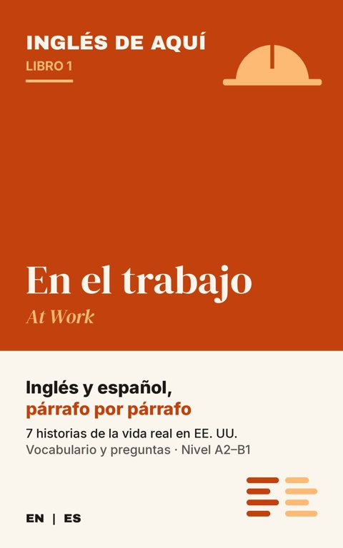
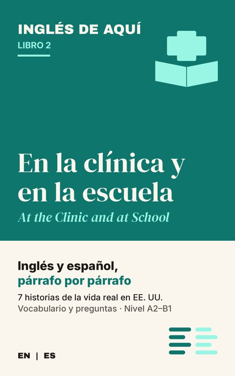
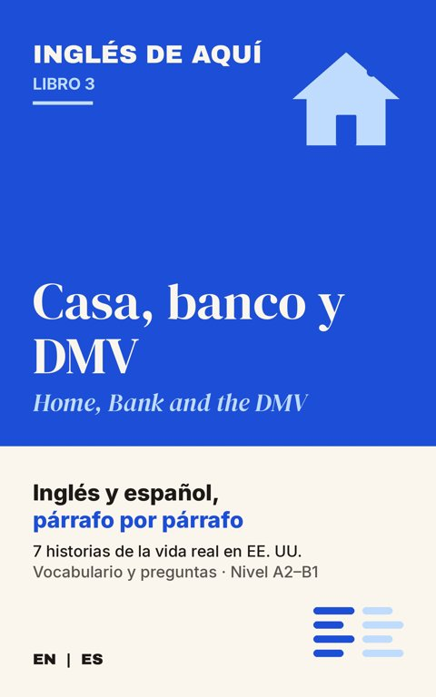

1Sofía has lived in her apartment in Portland, Oregon, for four months. She knows the bus driver on the morning route, the woman at the taquería on the corner and the cat that sleeps on the stairs. But she does not know her neighbors. In her building, people say “hi” in the hallway, and that is all.
1Sofía lleva cuatro meses en su departamento de Portland, Oregón. Ya conoce al chofer del autobús de la mañana, a la señora de la taquería de la esquina y al gato que se duerme en las escaleras. Pero no conoce a sus vecinos. En su edificio, la gente se dice “hi” en el pasillo y ya.
2One rainy afternoon, Sofía comes home from work and finds a box in front of her door. She picks it up. It is heavy. Then she reads the label: “Harold Walker, Apartment 3B.” Sofía lives in 3D. The delivery driver made a mistake.
2Una tarde lluviosa, Sofía llega del trabajo y encuentra una caja enfrente de su puerta. La levanta. Pesa mucho. Luego lee la etiqueta: “Harold Walker, Apartment 3B”. Sofía vive en el 3D. El repartidor se equivocó.
3She stands in the hallway for a moment. She could leave the box in front of 3B. But it is raining, the hallway door is always open, and boxes sometimes disappear. “Okay,” she says to herself. “I can do this.” She walks to 3B and knocks.
3Se queda parada en el pasillo un momento. Podría dejar la caja enfrente del 3B. Pero está lloviendo, la puerta del edificio siempre está abierta y a veces las cajas desaparecen. “Bueno”, se dice a sí misma. “Sí puedo”. Camina al 3B y toca la puerta.
4After a long moment, the door opens. An older man with white hair and a gray sweater looks at her. He uses a cane. “Yes?” Sofía holds up the box. “Hi. I’m Sofía, from 3D. I think this is yours. It was in front of my door.” The man looks at the label and his face changes completely. He smiles. “Well, look at that! I’ve been waiting for this all week.”
4Después de un buen rato, se abre la puerta. Un señor mayor, de pelo blanco y suéter gris, la mira. Usa bastón.
—¿Sí? Sofía le enseña la caja.
—Hola. Soy Sofía, del 3D. Creo que esto es suyo. Estaba enfrente de mi puerta. El señor lee la etiqueta y le cambia la cara por completo. Sonríe.
—¡Pero mira nada más! Llevo toda la semana esperándolo.
—¿Sí? Sofía le enseña la caja.
—Hola. Soy Sofía, del 3D. Creo que esto es suyo. Estaba enfrente de mi puerta. El señor lee la etiqueta y le cambia la cara por completo. Sonríe.
—¡Pero mira nada más! Llevo toda la semana esperándolo.
5“I’m Harold,” he says. “Thank you so much. You didn’t have to do that.” Sofía smiles back. “It’s no problem. It’s heavy. Do you want me to put it inside?” Harold opens the door wider. “Would you? That would be great. My back isn’t what it used to be.” Sofía carries the box to a small table next to a window full of plants.
5—Soy Harold —le dice—. Muchísimas gracias. No tenía por qué molestarse. Sofía le devuelve la sonrisa.
—No es molestia. Está pesada. ¿Quiere que se la pase para adentro? Harold abre más la puerta.
—¿De veras? Se lo agradecería mucho. Mi espalda ya no es lo que era. Sofía lleva la caja a una mesita junto a una ventana llena de plantas.
—No es molestia. Está pesada. ¿Quiere que se la pase para adentro? Harold abre más la puerta.
—¿De veras? Se lo agradecería mucho. Mi espalda ya no es lo que era. Sofía lleva la caja a una mesita junto a una ventana llena de plantas.
6“Can I ask what’s inside?” she says. “It’s so heavy.” Harold laughs. “Books. I’m a retired history teacher. I still buy too many books.” He points to the shelves. There are books everywhere: on the shelves, on the floor, on the chairs. Sofía laughs too. “My mother is the same. In Oaxaca, her house is full of books.”
6—¿Le puedo preguntar qué trae?
—le dice—. Pesa muchísimo. Harold se ríe.
—Libros. Soy maestro de historia jubilado. Todavía compro demasiados libros. Señala los libreros. Hay libros por todos lados: en los libreros, en el piso, en las sillas. Sofía también se ríe.
—Mi mamá es igualita. En Oaxaca, su casa está llena de libros.
—le dice—. Pesa muchísimo. Harold se ríe.
—Libros. Soy maestro de historia jubilado. Todavía compro demasiados libros. Señala los libreros. Hay libros por todos lados: en los libreros, en el piso, en las sillas. Sofía también se ríe.
—Mi mamá es igualita. En Oaxaca, su casa está llena de libros.
7“Oaxaca!” Harold says. “I visited Oaxaca in 1998. The food was incredible. Mole negro. I still think about it.” Sofía’s eyes open wide. “My grandmother makes the best mole negro in the world. Really. The best.” “I believe you,” Harold says. “Everyone’s grandmother makes the best mole.”
7—¡Oaxaca!
—dice Harold—. Fui a Oaxaca en 1998. La comida era increíble. El mole negro. Todavía me acuerdo de él. A Sofía se le abren mucho los ojos.
—Mi abuela hace el mejor mole negro del mundo. En serio. El mejor.
—Te creo —dice Harold—. La abuela de todo el mundo hace el mejor mole.
—dice Harold—. Fui a Oaxaca en 1998. La comida era increíble. El mole negro. Todavía me acuerdo de él. A Sofía se le abren mucho los ojos.
—Mi abuela hace el mejor mole negro del mundo. En serio. El mejor.
—Te creo —dice Harold—. La abuela de todo el mundo hace el mejor mole.
8They talk for ten minutes. Harold tells her about the history of their building, which is almost one hundred years old. Sofía tells him about her job at a bakery and her English classes at the community college. When she makes a mistake in English, Harold doesn’t correct her. He just listens.
8Platican diez minutos. Harold le cuenta la historia del edificio, que tiene casi cien años. Sofía le cuenta de su trabajo en una panadería y de sus clases de inglés en el colegio comunitario. Cuando se equivoca en inglés, Harold no la corrige. Nada más la escucha.
9Before she leaves, Harold says, “If you ever need help with your English homework, knock on my door. I was a teacher for thirty-five years. I miss it.” Sofía is surprised. “Really? That would be wonderful. And if you need help carrying anything, knock on my door.” “Deal,” Harold says, and they shake hands.
9Antes de que se vaya, Harold le dice: —Si algún día necesitas ayuda con tu tarea de inglés, toca mi puerta. Fui maestro treinta y cinco años. Lo extraño. Sofía se sorprende.
—¿De veras? Me encantaría. Y si usted necesita ayuda para cargar algo, toque mi puerta.
—Trato hecho —dice Harold, y se dan la mano.
—¿De veras? Me encantaría. Y si usted necesita ayuda para cargar algo, toque mi puerta.
—Trato hecho —dice Harold, y se dan la mano.
10Back in her apartment, Sofía writes some new phrases in her notebook: “I think this is yours.” “You didn’t have to do that.” “Knock on my door.” The next Saturday, she knocks on Harold’s door with a small container of her grandmother’s mole, made with the recipe her mother sent by WhatsApp. Harold tastes it and closes his eyes. “You were right,” he says. “The best in the world.”
10De regreso en su departamento, Sofía escribe unas frases nuevas en su cuaderno: “I think this is yours”. “You didn’t have to do that”. “Knock on my door”. El sábado siguiente, toca la puerta de Harold con un recipiente chiquito del mole de su abuela, hecho con la receta que su mamá le mandó por WhatsApp. Harold lo prueba y cierra los ojos.
—Tenías razón —le dice—. El mejor del mundo.
—Tenías razón —le dice—. El mejor del mundo.
Vocabulario
| English | Español |
|---|---|
| neighbor | el vecino, la vecina |
| package / box | el paquete / la caja |
| label | la etiqueta |
| delivery driver | el repartidor, la repartidora |
| hallway | el pasillo |
| to knock | tocar (la puerta) |
| cane | el bastón |
| retired | jubilado |
| shelf / shelves | el librero, los estantes |
| Deal! | ¡Trato hecho! |
Preguntas
Contesta en voz alta, en inglés. Toca cada pregunta para ver la respuesta.
Why did Sofía decide not to leave the box in front of 3B?¿Por qué decidió Sofía no dejar la caja enfrente del 3B?
Answer: Because it was raining, the building door is always open, and boxes sometimes disappear.
What was inside the box?¿Qué había dentro de la caja?
Answer: Books.
What did Harold offer to do for Sofía?¿Qué le ofreció hacer Harold a Sofía?
Answer: Help her with her English homework.
¿Te gustó? Hay 21 historias más

Inglés de Aquí 1: En el trabajo
El inglés de la obra, el almacén, la cocina y el talón de pago, en 7 historias cortas con el español al lado.
Próximamente en Google Play · $2.99
Inglés de Aquí 2: En la clínica y en la escuela
El inglés para la recepción de la clínica, el doctor, la farmacia y la junta con la maestra, en 7 historias con el español al lado.
Próximamente en Google Play · $2.99
Inglés de Aquí 3: Casa, banco y DMV
El inglés para rentar, abrir una cuenta, cambiar de plan de celular y sacar la licencia, en 7 historias con el español al lado.
Próximamente en Google Play · $2.99